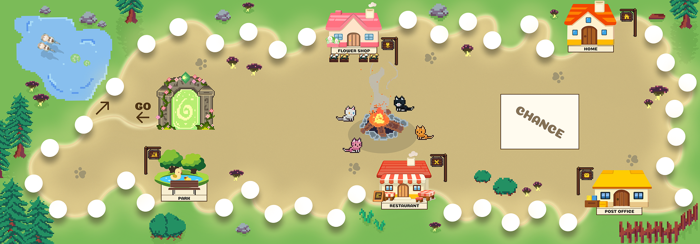
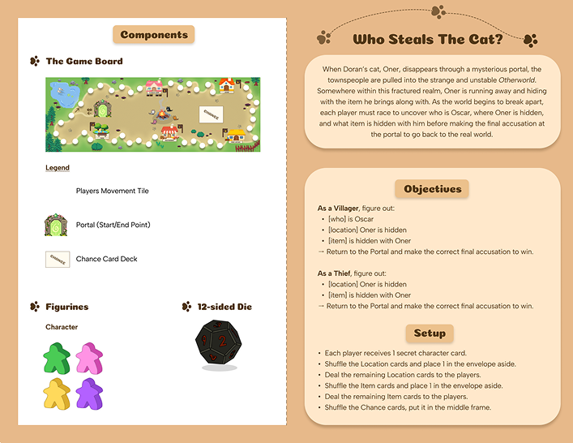
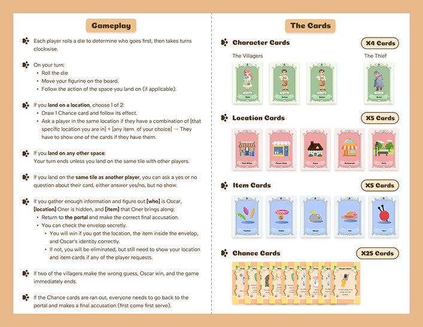

Team Project of 5
A narrative-based detective board game exploring how hidden roles, clue management, and player interaction shape strategic decisions.



Who Steals the Cat? is a cooperative detective board game built around a narrative of emotional conflict and hidden intentions. Players are placed in an unstable otherworld and must work together to uncover where the cat, Oner, and his toy are hidden, and safely return to the portal.
Players take on different character roles and rely on subtle clues provided through cards to locate key targets and progress through the game. The experience combines logical deduction, social inference, and time pressure, requiring players to balance collaboration with uncertainty.
This project is currently under development. The portfolio will be updated with final gameplay, systems, and design outcomes upon completion.
The images above present a preview, showcasing the visual direction, atmosphere, and early gameplay concepts of the project.